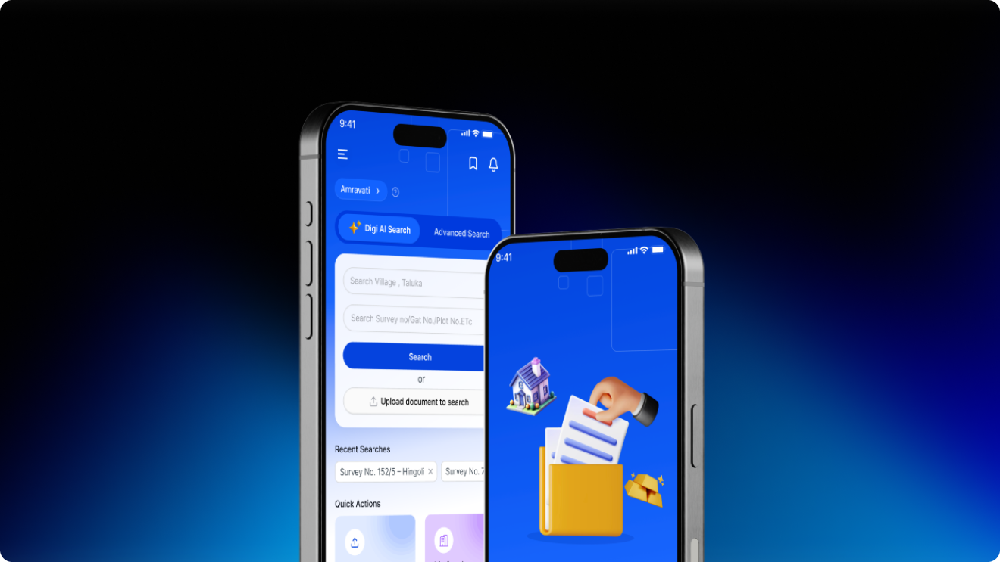

Mobile-First UX for B2B SaaS: Transforming Proptech Intelligence with DigiNotice
India’s 1st unified public notice intelligence SaaS platform, designed by Pratik Bachhav to streamline how property legal counsels, real estate developers, and banks search and verify public property title notices.
Uncovering the Problem
Legal and real estate professionals in India spent dozens of hours weekly manually scouring physical newspapers across 15+ regional languages to spot caveat filings, disputed property notices, and mortgage claims. Misidentifying a single title notice could result in crores in bad loans or litigation.
- ! High drop-off during data intake and report comprehension
- ! Cluttered numerical interfaces leading to decision paralysis
- ! Lack of actionable, personalized next steps for users
How I Approached It
I led the end-to-end design sprint from discovery interviews to high-fidelity prototyping, emphasizing cognitive ease, visual hierarchy, and instant value delivery.
- ✓ Conceived a mobile-first B2B workflow allowing lawyers and bank title searchers to look up survey numbers and property addresses in seconds.
- ✓ Crafted multi-filter parametric search with instant OCR text highlighting across regional newspaper clippings.
- ✓ Designed an automated property watchlist notification system that pings title researchers via WhatsApp and email the moment a disputed notice is filed.
- ✓ Developed high-density legal dashboard components tailored for speedy bulk triage and downloadable audit-ready PDF title reports.


“In B2B SaaS, seconds matter. By eliminating tedious newspaper scanning through intelligent UX architecture, DigiNotice turned a multi-day legal audit into a 30-second mobile query.”